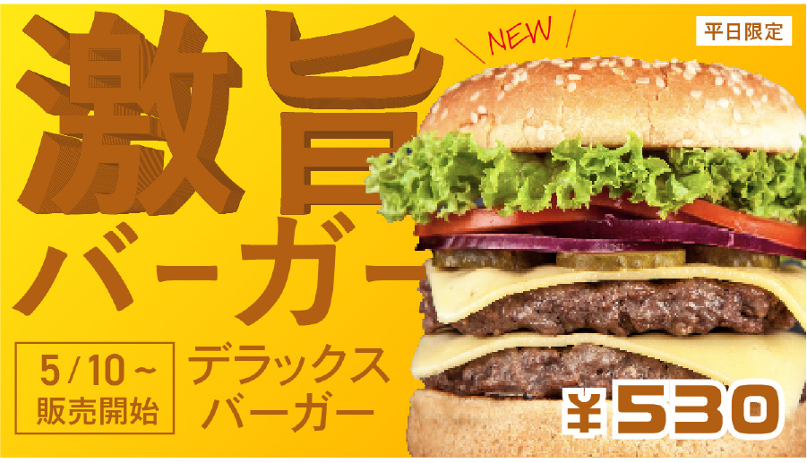

burger shop
#banner design

Concept
ハンバーガーショップのバナーPOPver.を作成しました。 商品であるハンバーガーの画像を大胆に大きく見せることで、一目で何のバナーなのかが分かるように意識しました。また、出来立てホヤホヤ感を出すために背景色は暖色系の黄色にし、 賑やかさを出すために文字はゴシック体を使用しました。
担当：デザイン制作
制作期間：3時間

Illustrator / Photoshop